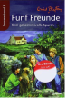

fünf Freunde Drei geheimnisvolle Spuren (Sammelband 9)

Anne, Georg (die eigentlich Georgina hei?t), Richard, Julius und Tim, der Hund - das sind die beruhmten fünf Freunde. Gemeinsam sind sie ein unschlagbares Team, das keine Gefahren scheut und jedes Ratsel lost. In diesem neunten Sammelband jagen die fünf Freunde Entfuhrer und Diebe: - fünf Freunde und die Entfuhrung - fünf Freunde und das versunkene Schiff - fünf Freunde und die Schwarze Maske